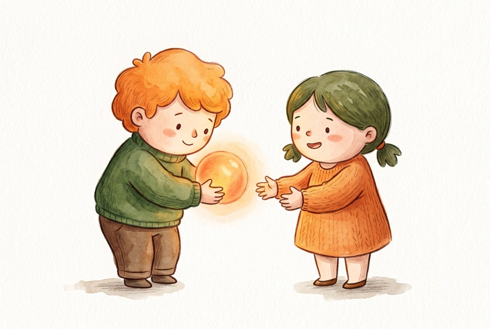

做球 —— 你給的那顆球，對方接得住嗎

即興劇裡有一個講法叫做球。
意思是：你給出去的東西，要讓對方容易接。不是把難題丟過去，是把材料遞過去。
這件事在舞台上很好判斷 —— 做球做得好，對方會立刻有反應，場景往前走；做得不好，對方會愣住，然後場面停下來。
什麼是難接的球
「你有什麼感覺？」
這是治療室裡最常見的問句之一，也常常是一顆難接的球。
難在哪裡？因為它把全部的工作都交給對方：他要先辨識自己的狀態，再找到對應的詞彙，再判斷這個詞說出來會不會被誤解，然後才能回答。
對於情緒辨識能力好、又信任你的人，這顆球不難。但對於一個從小沒被問過這個問題的人，你等於直接要求他做一件他沒有練習過的事。
他多半會回答「還好」。然後你會覺得他有阻抗。
好接的球長什麼樣
好球的特徵是：難度在你這邊，不在他那邊。
你先做一部分的工作，把材料處理到他可以直接使用的程度。
「你剛剛講到你媽打電話來的時候，講話速度變快了。」
他不需要辨識情緒，也不需要找詞。他只需要對一個具體的觀察說「對」或「不是」。這兩個答案都能讓對話往前。
「聽起來那天有兩件事同時發生 —— 一件是他忘了，另一件是他忘了以後的反應。哪一件比較難受？」
你先把混亂的東西整理成兩個選項。他不用組織，只要選。
「我猜那個當下你有點想笑，但笑出來會很奇怪。是這樣嗎？」
你甚至幫他把難以承認的部分先說出口了。他只要承認或否認。
這不是簡化，是承重
有人會擔心：這樣是不是太引導了？是不是替個案想太多？
我的看法相反。做球不是替他決定答案，是替他承擔難度。
三個例子裡，最後決定內容的都是他。你只是把「要從零開始組織自己」這件事拿掉了一部分。
真正的引導是這樣的：「你是不是覺得被拋棄了？」—— 這句話給的不是材料，是結論。他只能同意或反抗。
差別在於：好球擴大他的選項，引導縮小他的選項。
什麼時候會做不出好球
通常不是技術問題，是狀態問題。
你自己太滿的時候。 腦袋裡有太多假設要驗證，就會急著丟出封閉式的問題去印證，而不是遞材料。
你有點怕他的時候。 對於情緒強烈或容易生氣的個案，人會不自覺把球做得很安全、很模糊，結果反而更難接。
你想證明什麼的時候。 想證明自己有在聽、有專業度、有進展 —— 這些都會讓球變成表演，而不是給予。
即興劇裡有一句更狠的話：如果你的搭檔看起來很爛，那是你做球做得爛。
這句話在治療室裡不完全成立 —— 個案的困難不是你造成的。但它有一個很有用的提醒：當你覺得會談卡住、對方不配合的時候，先看看自己給出去的是什麼。
一個可以檢查的問題
會談結束後，回想你問過的三個問題，然後問自己：
他要做多少工作，才能回答我這一句？
如果答案是「他得先想清楚自己是誰、要什麼、感覺什麼」—— 那顆球太重了。
拆開來，一次給一點，把整理的工作放在自己這邊。
做球做得好的人，看起來常常不太顯眼。因為場上發光的是接球的那個。
治療室裡也是同一件事。